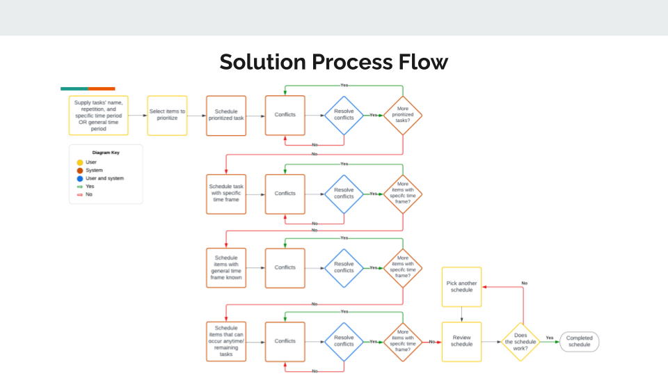

Process Flows
Current Process Flow |
Solution Process Flow |
|
The current process flow when it comes to creating a schedule is as follows 
|
The following is our solution process flow:  |
UNDER CONSTRUCTION